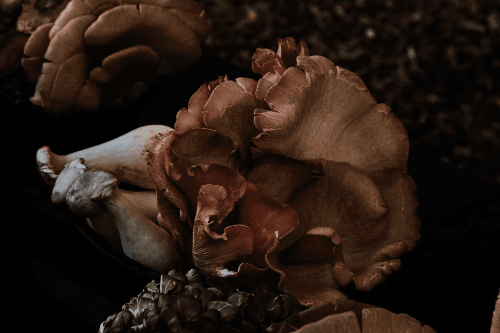

A live look at the network
Where gathering becomes global.
Missions on the ground, and the support that makes them possible — wherever they happen to be.
News

The Greatest Lie We Were Ever Sold Was That We Were Meant to Stand Alone
INSIGHTS CULTURE Samantha Perion, Table Talks Australia Team
For too long we've celebrated independence as the highest ideal. It's time to remember that every thriving society, economy and ecosystem has always depended on something greater: one another.
Featured Experiences
WE MAKE COOL CONCEPTS AND BRING THEM TO LIFE.
Through architecture, cultural programming and hospitality, spaces become living platforms where people, culture and place intersect.
Our Philosophy
Social Architecture
The intentional design of environments and experiences that shape how people interact, connect and form community.
Story
We translate brand identity into spatial narrative and lived experience.
Heritage
We ground each project in place, context and cultural relevance.
Nature
We consider landscape, climate and materiality as integral to how each project communicates its narrative.